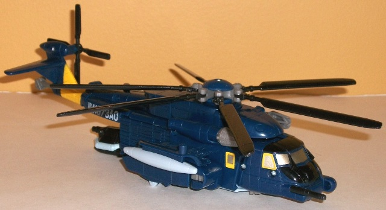
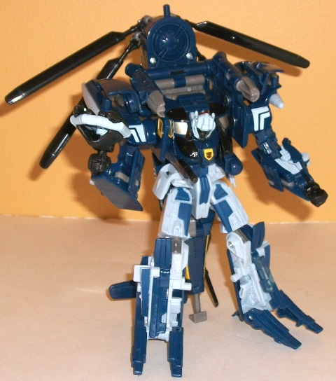
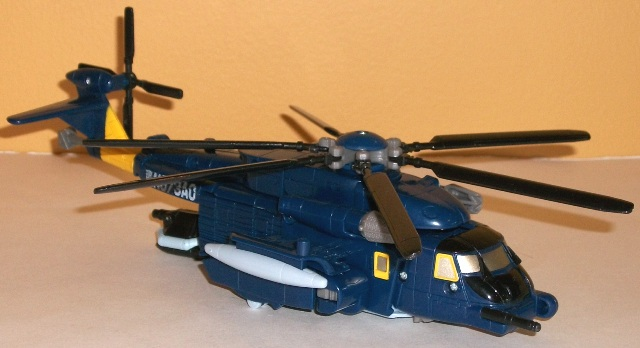
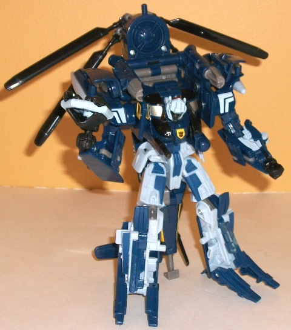
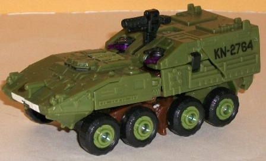
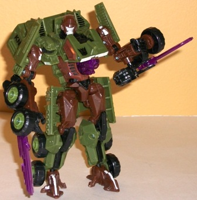

 
Allegiance : Autobot
Size : Voyager
Difficulty of Transformation : Medium
Color Scheme : Dark navy blue, pale bluish white, and some black, milky gray, yellow, transparent red, and silver
Rating : 8.7
 Master
of Metallikato Vs. Set (Toys "R" Us Exclusive)
Master
of Metallikato Vs. Set (Toys "R" Us Exclusive)
Price
: $35 U.S.
 Autobot
Whirl
Autobot
Whirl


Allegiance
: Autobot
Size
: Voyager
Difficulty of Transformation
: Medium
Color Scheme
: Dark navy blue, pale
bluish white, and some black, milky gray, yellow, transparent red, and
silver
Rating
: 8.7
(NOTE: Because this is a repaint, this is not a full-blown review. This mainly covers any changes made to the mold and the color scheme, and merely compares it to the original Movie Voyager Blackout w/ Scorponok toy. For a review on the mold itself, read the review of the original Movie Voyager Blackout w/ Scorponok toy here .)
Whirl was a blue helicopter
in G1, and so this redeco homage here tied back to that original version
of him. However, Blackout was already light blue, so making this version
of Whirl that same shade would have been... repetitive, to say the least.
Luckily, Hasbro instead decided to go a darker route when it came to RotF
Whirl's blue, so he doesn't look nearly as "same-y". For those who still
want Whirl to have pale blue, though, that's now his secondary color (mostly
visible in robot mode), though it's been lightened up to the point where
it's nearly white now. Both colors, depsite being different shades of blue,
go together very well due to the high contrast, and the couple of areas
of black, gray/silver, and yellow help to shake things up a bit more, particularly
in vehicle mode. That said, the black used near the front of the vehicle
mode doesn't stick out from the dark blue enough, and I feel that paint
app would've been better used elsewhere. The most ingenious paint app on
this toy is definitely Whirl's "production number" on his side-- N073A0.
Looked at normally, it means nonsense. However, look at it UPSIDE DOWN
and it's very close to spelling out "OVELON", the name of the line G1 Whirl's
mold originally appeared in. Is that some really nice obscure homaging
or what?
No mold changes have
been made to RotF Whirl per se, but he does have the same mold alterations
made to
Movie Evac
-- namely, the gun and modified
head. I really would've liked a one-optic head, though, since that was
a bit part of G1 Whirl's "look". (It should also be noted that, for some
reason, the rear "cage" piece of my Whirl is missing, so although that
piece isn't included in the above pics, it's still on the toy.)
Decepticon
Bludgeon


Allegiance
: Decepticon
Size
: Deluxe
Difficulty of Transformation
: Medium
Color Scheme
: Dark jungle green,
moderately dark muddy brown, and some transparent violet, charocal black,
and pale glossy bone white
Rating
: 9.3
(NOTE: Because this is a repaint, this is not a full-blown review. This mainly covers any changes made to the mold and the color scheme, and merely compares it to the original Movie Wreckage toy. For a review on the mold itself, read the review of the original Movie Wreckage toy here .)
When most people think
of G1 Bludgeon, they think of the yellow Samurai skull-faced dude, but
that's G1 Bludgeon's Pretender shell-- his actual, "core" form inside the
pretender shell was a tank with a similar color scheme to this RotF toy.
So, although this isn't a tank per se-- it's a military transport instead--
the alt mode is close enough, and given the blades it's not that far of
a stretch to call it Bludgeon. The dark green works quite well as a main
color, and the muddy brown contrasts well with it-- it's a very "military"
color scheme, to be sure. The transparent purple is also a GORGEOUS shade,
used sparingly as it is, and looks particularly good on Bludgeon's swords.
The black also looks fairly good in comparison to the other colors, but
it's more of an "impure" charcoal black, which I don't like nearly as much
as a more "solid" black. As far as the paint apps go, he looks fairly good
in robot mode-- I like the bone white on his already skull-like face to
emphasize its look-- but it's almost bereft of paint in vehicle mode, which,
given that it's all green, looks more boring than it should have been
No mold changes have
been made to RotF Decepticon Bludgeon.
The "Master of Metallikato" set has two of the best color schemes on some pretty darn good molds (particularly in regards to Bludgeon). It's a bit more than if the toys had been released seperately at retail, but it's not that big of a markup. Highly recommended if you don't have any previous versions of these molds-- otherwise, mildly recommended.
Review by Beastbot